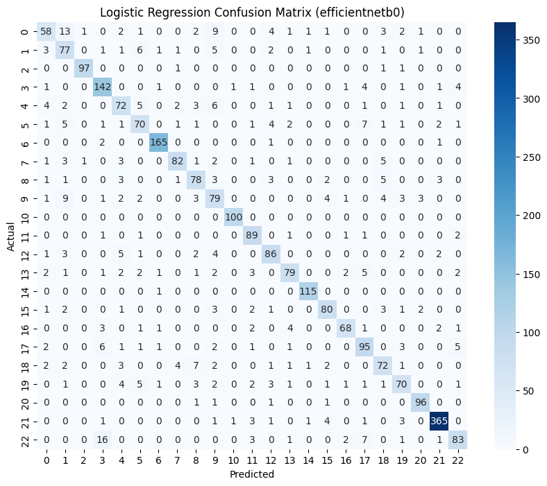

Kết quả và Quy trình Thực hiện
1. Phân tích dữ liệu (EDA)
Đặc điểm dữ liệu
Bộ dữ liệu Sea Animals Image Dataset gồm tổng cộng 13.711 ảnh ở định dạng .jpg và .png, mỗi ảnh thuộc về một trong 23 lớp sinh vật biển phục vụ cho bài toán nhận dạng và phân loại sinh vật biển.
Phân tích kích thước ảnh
| Thông số | Count | Mean | Std | Min | 25% | 50% | 75% | Max |
|---|---|---|---|---|---|---|---|---|
| Width | 13.711 | 293,07 | 55,04 | 131 | 300 | 300 | 300 | 5120 |
| Height | 13.711 | 222,41 | 49,81 | 63 | 200 | 218 | 225 | 3840 |
| Channels | 13.711 | 3,00 | 0,05 | 1 | 3 | 3 | 3 | 4 |
5 Outliers
Kích thước ≥1000×1000px
13,706 ảnh thích hợp
Dùng cho trực quan hóa phân bố kích thước

Phân bố kích thước ảnh (đã loại bỏ outliers)

Phân bố tỷ lệ khung hình ảnh
Nhận xét: Hầu hết ảnh có kích thước phổ biến từ 200x200 đến 300x300. Tỷ lệ khung hình chủ yếu tập trung quanh 1.3 - 1.6. Số kênh màu chủ yếu là 3 (RGB), với một vài ảnh kênh đơn (grayscale).
Phân tích đặc trưng hình ảnh
Phân bố độ sáng ảnh
Phân bố độ tương phản ảnh
Nhận xét: Tập dữ liệu có cân bằng ánh sáng tốt, không cần tăng cường mạnh các kỹ thuật như "brightness augmentation" trong giai đoạn tiền xử lý. Tập dữ liệu cũng có mức độ tương phản ổn định, phù hợp cho việc trích xuất đặc trưng.
Phân bố màu
Phân bố màu sắc ảnh
Nhận xét: Kênh Green (G) có phân bố lệch phải nhẹ, cho thấy màu xanh lá thường chiếm ưu thế trong hình ảnh sinh vật biển, có thể do ảnh hưởng của ánh sáng môi trường nước biển hoặc đặc điểm sinh học của sinh vật. Kênh Blue (B) có giá trị trung bình cao hơn hai kênh còn lại, phản ánh rõ đặc trưng môi trường biển với sắc xanh đặc trưng. Nhìn chung, mức độ phân tán vẫn khá lớn, chứng tỏ tập dữ liệu có độ đa dạng màu sắc cao
Phân bố số lượng ảnh theo lớp

Phân bố số lượng ảnh theo lớp
Nhận xét: Tập dữ liệu không cân bằng , tỉ lệ giữa lớp lớn nhất và nhỏ nhất lên tới 4.6 lần . Vì vậy cần áp dụng các kỹ thuật như "data augmentation" hoặc "class weighting" trong giai đoạn huấn luyện mô hình
2. Chia tập dữ liệu
Bộ dữ liệu được chia thành hai phần: Train và Test với tỉ lệ 80 : 20. Chúng tôi sử dụng Stratified Split để đảm bảo phân bố các môn học trong mỗi tập vẫn giữ nguyên, tránh lệch lớp.
3. Tiền xử lý dữ liệu (Preprocessing)
Padding & Resize
Thay vì resize trực tiếp gây méo hình, nhóm đã thêm viền đen (padding) để ảnh thành hình vuông, sau đó mới resize về kích thước chuẩn 224×224px.
Độ sáng & Độ tương phản
Tăng nhẹ 10% để cải thiện khả năng trích xuất đặc trưng mà không làm ảnh quá sáng hay quá tối.

Ảnh trước và sau khi tiền xử lý
Kết quả: Phương pháp này bảo toàn tỉ lệ khung hình gốc của ảnh, giữ nguyên đặc trưng hình học của sinh vật biển, đồng thời đảm bảo đầu vào đồng nhất cho các mô hình deep learning.
Tăng cường ảnh (Augmentation)
Áp dụng Lật ngang, Xoay nhẹ, và Chỉnh độ sáng/tương phản để làm phong phú dữ liệu huấn luyện, giúp mô hình tổng quát tốt hơn.
Chuẩn hóa (Normalization)
Đưa giá trị pixel về phân phối chuẩn của ImageNet để tận dụng tối đa sức mạnh các mô hình Pretrained.
Ảnh sau khi tăng cường
4. Trích xuất đặc trưng (Feature Extraction)
Trong bước này, chúng ta trích xuất đặc trưng (features) từ ảnh bằng các mô hình học sâu đã huấn luyện trước trên ImageNet, giúp mô hình nắm bắt được thông tin hình học và ngữ nghĩa của sinh vật biển một cách hiệu quả.Hai hướng tiếp cận chính:
CNN-based Models
ResNet50 — Kiến trúc sâu với residual connections, tốt cho việc trích xuất đặc trưng phức tạp.
EfficientNetB0 — Mô hình cân bằng giữa độ chính xác và hiệu suất, tiết kiệm bộ nhớ và thời gian tính toán.
Transformer-based Models
ViT (Vision Transformer) — Mô hình Transformer áp dụng cho thị giác máy, xử lý ảnh dưới dạng chuỗi các patch.
Chiến lược: Bằng cách kết hợp cả hai hướng tiếp cận (CNN và Transformer), chúng ta có thể so sánh ưu điểm của từng kiến trúc và chọn ra mô hình phù hợp nhất cho bài toán phân loại sinh vật biển.
5. Huấn luyện và Đánh giá Mô hình
Kiến trúc và Mô hình Huấn luyện
Feature Extractors
ResNet50 — Kiến trúc sâu với
residual connections.
EfficientNetB0 — Mô hình cân bằng
độ chính xác và hiệu suất.
Vision Transformer (ViT) — Xử lý
ảnh dưới dạng chuỗi patch.
Classifiers (Phân loại)
Logistic Regression — Đơn giản
nhưng hiệu quả.
SVM — Hỗ trợ vector machine với
kernel phi tuyến.
Random Forest — Ensemble learning
từ nhiều cây quyết định.
Kết quả Huấn luyện
Feature
Model
Accuracy
Precision
Recall
F1-score
ResNet50
Logistic Regression
0.8181
0.8180
0.8181
0.8174
Linear SVM
0.7926
0.7952
0.7926
0.7922
Random Forest
0.7244
0.7313
0.7244
0.7161
EfficientNetB0
Logistic Regression
0.8451
Best
0.8464
Best
0.8451
Best
0.8445
Best
Linear SVM
0.8246
0.8256
0.8246
0.8239
Random Forest
0.7630
0.7659
0.7630
0.7603
ViT-Base-Patch16
Logistic Regression
0.0314
0.0275
0.0314
0.0257
Linear SVM
0.0868
0.0616
0.0868
0.0362
Random Forest
0.1382
0.0319
0.1382
0.0400
Bảng so sánh hiệu năng các mô hình CNN và Transformer với các classifier khác nhau
EfficientNetB0 + Logistic Regression
Best
Accuracy
0.8451
overall
Precision
0.8464
macro
Recall
0.8451
macro
F1-score
0.8445
macro
Metrics reported on the test split
(Stratified
80/20)

Confusion Matrix cho mô hình tốt nhất
Nhận xét chi tiết:
-
• EfficientNetB0 + Logistic Regression
là tổ hợp tối ưu nhất với accuracy 84.51%, đạt cân bằng tốt giữa độ chính xác và tốc độ
tính toán.
-
• ResNet50 cũng cho kết quả tốt
(81.81%) nhưng không vượt qua EfficientNetB0, do cấu trúc phức tạp hơn.
-
• Logistic Regression luôn vượt trội
hơn SVM và Random Forest trong tất cả các trường hợp, chứng tỏ features từ CNN đã rất
tốt.
-
• Vision Transformer (ViT) cho kết quả
kém (3-14%), có thể do thiếu fine-tuning hoặc không thích hợp với dataset nhỏ.
Feature Extractors
ResNet50 — Kiến trúc sâu với residual connections.
EfficientNetB0 — Mô hình cân bằng độ chính xác và hiệu suất.
Vision Transformer (ViT) — Xử lý ảnh dưới dạng chuỗi patch.
Classifiers (Phân loại)
Logistic Regression — Đơn giản nhưng hiệu quả.
SVM — Hỗ trợ vector machine với kernel phi tuyến.
Random Forest — Ensemble learning từ nhiều cây quyết định.
| Feature | Model | Accuracy | Precision | Recall | F1-score |
|---|---|---|---|---|---|
| ResNet50 | Logistic Regression | 0.8181 | 0.8180 | 0.8181 | 0.8174 |
| Linear SVM | 0.7926 | 0.7952 | 0.7926 | 0.7922 | |
| Random Forest | 0.7244 | 0.7313 | 0.7244 | 0.7161 | |
| EfficientNetB0 | Logistic Regression | 0.8451 Best | 0.8464 Best | 0.8451 Best | 0.8445 Best |
| Linear SVM | 0.8246 | 0.8256 | 0.8246 | 0.8239 | |
| Random Forest | 0.7630 | 0.7659 | 0.7630 | 0.7603 | |
| ViT-Base-Patch16 | Logistic Regression | 0.0314 | 0.0275 | 0.0314 | 0.0257 |
| Linear SVM | 0.0868 | 0.0616 | 0.0868 | 0.0362 | |
| Random Forest | 0.1382 | 0.0319 | 0.1382 | 0.0400 |
Bảng so sánh hiệu năng các mô hình CNN và Transformer với các classifier khác nhau
EfficientNetB0 + Logistic Regression
Metrics reported on the test split (Stratified 80/20)
Confusion Matrix cho mô hình tốt nhất
Nhận xét chi tiết:
- • EfficientNetB0 + Logistic Regression là tổ hợp tối ưu nhất với accuracy 84.51%, đạt cân bằng tốt giữa độ chính xác và tốc độ tính toán.
- • ResNet50 cũng cho kết quả tốt (81.81%) nhưng không vượt qua EfficientNetB0, do cấu trúc phức tạp hơn.
- • Logistic Regression luôn vượt trội hơn SVM và Random Forest trong tất cả các trường hợp, chứng tỏ features từ CNN đã rất tốt.
- • Vision Transformer (ViT) cho kết quả kém (3-14%), có thể do thiếu fine-tuning hoặc không thích hợp với dataset nhỏ.